|
|
Previous Reads
|

|
The Greek Adventure
 This is a period of time and a part of the world
I knew nothing about.
The Christians and the Muslims at each other's throats
and the idealistic Europeans sticking themselves in
the middle of it all.
Few parallels to today, but, if you don't learn the
first time, you are bound to repeat history.
This is a period of time and a part of the world
I knew nothing about.
The Christians and the Muslims at each other's throats
and the idealistic Europeans sticking themselves in
the middle of it all.
Few parallels to today, but, if you don't learn the
first time, you are bound to repeat history.
(November 2004)
|
|
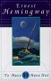
|
To Have and To Have Not
A dark work that is about the choices to make and the
death that we all must deal with.
Unlike many reviewers, I didn't have any sympathey for
the lead character which made the ending more of a statement
of life in general rather than a story about a man.
(November 2004)
|
|
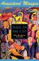
|
Tales of the City
 A fun romp in the San Francisco of the 70's.
I lived down in the area at that time but I didn't
manage to take part in the drugs or alternate lifestyle
(I was down in the burgening Silicon Valley).
This is a fun soap opera and, if you like interesting
characters, this is a fun read.
A fun romp in the San Francisco of the 70's.
I lived down in the area at that time but I didn't
manage to take part in the drugs or alternate lifestyle
(I was down in the burgening Silicon Valley).
This is a fun soap opera and, if you like interesting
characters, this is a fun read.
(July 2004)
|
|
|
The Cat Who Turned On and Off
Another of the "Cat" mystery books.
Like the
other
that I read, if you're into bookish characters,
these are entertaining.
(July 2004)
|
|
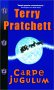
|
Carpe Jugulum
Not the best of Pratchatt's world books.
(July 2004)
|
|
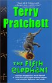
|
The Fifth Elephant
(May 2004)
|
|
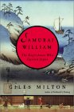
|
Samari William: The Englishman Who Opened the East
William Adams lead an interesting life as the first
westerner who integrated with the Japanese society.
His story is the basis for the book
Shogun
and many other books and movies.
This book is a historians report of his time there
and it has as much to do with the other westerners
living in Japan as it does with William Adams.
It is clear that the author found source material
that has been converted almost word for word into
sections of this book.
Some of the chapters were rather dry.
But, since, I'm interested in this period
I found some of the descriptions of how many of the
English lived in Japan.
(May 2004)
|
|
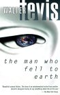
|
The Man Who Fell to Earth
A satisfying piece of science fiction
(well, actually, the purists would probably claim this
is not "science fiction" since it doesn't have any science).
A story about an alien who comes to earth with a
plan to build a ferry boat (space ship) to ferry
the last of his dying race from their planet which
they have destroyed over the millennia with wars
and resource depletion.
This doesn't go where you think it will go and the
book doesn't close with a clean closure leaving many
questions to ponder.
A good read.
(May 2004)
|
|
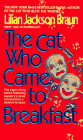
|
The Cat Who Came to Breakfast
I remember seeing the "cat" mysteries around my mother's
house so, when I ran across a copy and some time,
I decided to find out what they were all about.
When younger, I enjoyed the Lord Peter Wimsey stories
and these are similar in tone and content.
The stories are really about the characters.
You follow them through their lives as the books progress.
The people are all mild, bookish sorts --
lots of librarians, teachers and clergy
And there are cute, small animals -- cats in this case.
All that said, the murder mysteries that underlie the
real reason for the books can be rather weak and that
is the case for this particular book.
The solution comes quickly and unsatisfactorily
in the last chapter (are there any editors in the
world any more?).
But the book is a fun light read and if you like mild,
bookish type characters,
I'm sure the whole series of "Cat" mysteries will
be just you cup of tea.
(May 2004)
|
|
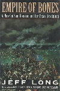
|
Empire of Bones: A Novel of Sam Houston and the Texas Revolution
This is a book more about the people than the events of
the Texas Revolution.
And, the people as seen by this one author, at that.
We spend the book in the head of Sam Houston as he waffles
and depresses through his stumbling, accidental generalship
of the Texas army.
The general shape of the historical facts are probably here
and a reader is drawn into what it must have been like to
live and fight in that time, but the story goes on forever
and Sam just doesn't rise to any level of true believability.
This wouldn't be my first choice for historical fictional
account of the time.
(March 2004)
|
|
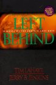
|
Left Behind
I heard the buzz around this book so I thought I'd
check it out.
I had reactions on two levels:
I'm not a believer in the Rapture and other recently
popular mystical and magical beliefs, but I can see
how this book works as a powerful and moving statement
and call to action for people in this cult.
As a book reader, though, the dialog is lame
and the plotting is clumsy.
For believers, this is a 'must have'.
For non-believers, this will be a poorly written education.
(March 2004)
|
|
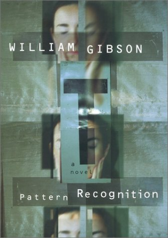
|
Pattern Recognition
 I thoroughly enjoyed this read.
Like all of Gibson's books, the story is deeply connected
to the technology, but the technology is not the point.
The point is the world it creates and how the people
live and react in this new world.
This story is in the present and inhabits that
rearified air of advertising, spies and russian mafia.
About half way through the book, I was afraid that the
story (with a title like "Pattern Recognition") would
turn out like Umberto Eco's
Foucault's Pendulum
but this book lead to a different ending.
But like Eco's book, this book is deeply researched --
I learned much about Tokyo, street fashion, pilates
and London.
And it all was interwoven into a believable world where,
unlike so many anti-utopian stories, is a crazy world
where people can live and be happy.
I thoroughly enjoyed this read.
Like all of Gibson's books, the story is deeply connected
to the technology, but the technology is not the point.
The point is the world it creates and how the people
live and react in this new world.
This story is in the present and inhabits that
rearified air of advertising, spies and russian mafia.
About half way through the book, I was afraid that the
story (with a title like "Pattern Recognition") would
turn out like Umberto Eco's
Foucault's Pendulum
but this book lead to a different ending.
But like Eco's book, this book is deeply researched --
I learned much about Tokyo, street fashion, pilates
and London.
And it all was interwoven into a believable world where,
unlike so many anti-utopian stories, is a crazy world
where people can live and be happy.
(February 2004)
|
|
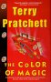
|
The Color of Magic
My daughter gave me the Christmas present of the first of
Partcett's Discworld series.
This is the first book and it's humor is very much in the
Hitchhiker's Guide to the Galaxy type. That is, very enjoyable
but you must take it in spoon fulls.
Don't read this book in one sitting.
Even consider reading a section a week.
The situations are very outlandish and low-probability events
are the norm. I found reading it too quickly, lessened the effect
of the humor.
It's fun. Don't get me wrong. I gave it a 3.
But pace yourself.
(January 2004)
|
|
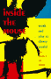
|
Inside the Mouse
 Several academic socal commentators set out to interview Disney
employees, take their families to the park and then to write about
the social, cultural and personal impacts and experience.
This book is the unsatisfying result.
Despite the information gathering (interviews and historical research
the papers are not "academic" in the sense that they present
quantitative evidence for conclusions or observations.
The interviews are woven in as antecdotes the gives everything
a subjective feel. The social commentary all comes from the
we're-all-being-turned-into-wage-slave-consumers school of throught
which, except for a some brief comments on people's perceptions
of public vs private spaces, just seems a recounting of the author's
previous biases.
The interviews were also with "front line" employees -- the people
running the rides and running the food courts. I would have been
interested in what the "suits" think about Disney and their jobs.
All, in all, disappointing.
Several academic socal commentators set out to interview Disney
employees, take their families to the park and then to write about
the social, cultural and personal impacts and experience.
This book is the unsatisfying result.
Despite the information gathering (interviews and historical research
the papers are not "academic" in the sense that they present
quantitative evidence for conclusions or observations.
The interviews are woven in as antecdotes the gives everything
a subjective feel. The social commentary all comes from the
we're-all-being-turned-into-wage-slave-consumers school of throught
which, except for a some brief comments on people's perceptions
of public vs private spaces, just seems a recounting of the author's
previous biases.
The interviews were also with "front line" employees -- the people
running the rides and running the food courts. I would have been
interested in what the "suits" think about Disney and their jobs.
All, in all, disappointing.
(January 2004)
|